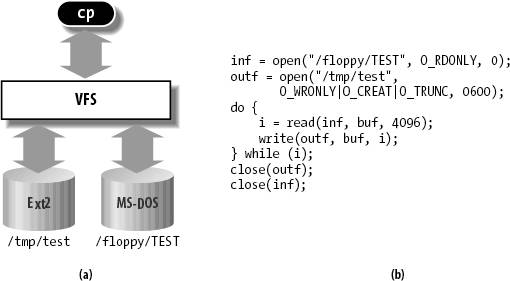
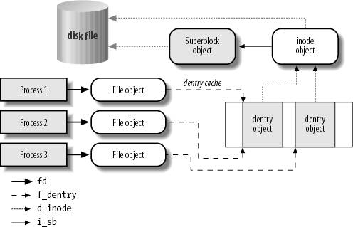

{% include JB/setup %}
{% raw %}
<div>


<a name="understandlk-CHP-12-SECT-1"></a>
<h3 class="docSection1Title">12.1. The Role of the Virtual Filesystem (VFS)</h3><a name="IDX-CHP-12-2854"></a>
<a name="IDX-CHP-12-2855"></a>
<a name="IDX-CHP-12-2856"></a>
<a name="IDX-CHP-12-2857"></a>
<a name="IDX-CHP-12-2858"></a>
<a name="IDX-CHP-12-2859"></a>
<a name="IDX-CHP-12-2860"></a>
<p class="docText1">The <span class="docEmphasis">Virtual Filesystem</span> (also known as Virtual Filesystem Switch or <span class="docEmphasis">VFS</span>) is a kernel software layer that handles all system calls related to a standard Unix filesystem. Its main strength is providing a common interface to several kinds of filesystems.</p>
<p class="docText1">For instance, let's assume that a user issues the shell command:</p>
<pre class="calibre27">
    $ cp /floppy/TEST /tmp/test</pre><br class="calibre7"/>
<p class="docText1">where <span class="docEmphasis">/floppy</span> is the mount point of an MS-DOS<a name="IDX-CHP-12-2861"></a> 
 diskette and <span class="docEmphasis">/tmp</span> is a normal Second Extended Filesystem (Ext2) directory. The VFS is an abstraction layer between the application program and the filesystem implementations (see <a class="pcalibre5 docLink pcalibre1" href="#understandlk-CHP-12-FIG-1">Figure 12-1</a>(a)). Therefore, the <span class="docEmphasis">cp</span> program is not required to know the filesystem types of <span class="docEmphasis">/floppy/TEST</span> and <span class="docEmphasis">/tmp/test</span>. Instead, <span class="docEmphasis">cp</span> interacts with the VFS by means of generic system calls known to anyone who has done Unix programming (see the section "<a class="pcalibre5 docLink pcalibre1" href="understandlk-CHP-1-SECT-5.html#understandlk-CHP-1-SECT-5.6">File-Handling System Calls</a>" in <a class="pcalibre5 docLink pcalibre1" href="understandlk-CHP-1.html#understandlk-CHP-1">Chapter 1</a>); the code executed by <span class="docEmphasis">cp</span> is shown in <a class="pcalibre5 docLink pcalibre1" href="#understandlk-CHP-12-FIG-1">Figure 12-1</a>(b).</p>
<a name="understandlk-CHP-12-FIG-1"></a><p class="calibre14"><center class="calibre8">
<h5 class="docFigureTitle">Figure 12-1. VFS role in a simple file copy operation</h5>
</center></p><br class="calibre7"/>
<p class="docText1">Filesystems supported by the VFS may be grouped into three main classes:</p>
<a name="IDX-CHP-12-2862"></a><a name="IDX-CHP-12-2863"></a><a name="IDX-CHP-12-2864"></a><a name="IDX-CHP-12-2865"></a><a name="IDX-CHP-12-2866"></a><a name="IDX-CHP-12-2867"></a><a name="IDX-CHP-12-2868"></a><a name="IDX-CHP-12-2869"></a><a name="IDX-CHP-12-2870"></a><a name="IDX-CHP-12-2871"></a><a name="IDX-CHP-12-2872"></a><a name="IDX-CHP-12-2873"></a><a name="IDX-CHP-12-2874"></a><a name="IDX-CHP-12-2875"></a><a name="IDX-CHP-12-2876"></a><a name="IDX-CHP-12-2877"></a><a name="IDX-CHP-12-2878"></a><a name="IDX-CHP-12-2879"></a><a name="IDX-CHP-12-2880"></a><a name="IDX-CHP-12-2881"></a><a name="IDX-CHP-12-2882"></a><a name="IDX-CHP-12-2883"></a><a name="IDX-CHP-12-2884"></a><a name="IDX-CHP-12-2885"></a><a name="IDX-CHP-12-2886"></a><a name="IDX-CHP-12-2887"></a><a name="IDX-CHP-12-2888"></a><a name="IDX-CHP-12-2889"></a><a name="IDX-CHP-12-2890"></a><a name="IDX-CHP-12-2891"></a><a name="IDX-CHP-12-2892"></a><a name="IDX-CHP-12-2893"></a><a name="IDX-CHP-12-2894"></a><a name="IDX-CHP-12-2895"></a><a name="IDX-CHP-12-2896"></a><a name="IDX-CHP-12-2897"></a><a name="IDX-CHP-12-2898"></a><a name="IDX-CHP-12-2899"></a><a name="IDX-CHP-12-2900"></a><dl class="docText1"><dt class="calibre7"><br class="calibre7"/><p class="calibre14"><span class="docPubcolor"><span class="docEmphasis">Disk-based filesystems</span></span></p></dt><a name="IDX-CHP-12-2862"></a>
<dd class="calibre20"><p class="docList">These manage memory space available in a local disk or in some other device that emulates a disk (such as a USB flash drive). Some of the well-known disk-based filesystems<a name="IDX-CHP-12-2863"></a> 
 supported by the VFS are:</p>
<ul class="calibre66"><li class="calibre12"><p class="docList">Filesystems for Linux such as the widely used Second Extended Filesystem (Ext2), the recent Third Extended Filesystem (Ext3), and the Reiser Filesystems (ReiserFS<a name="IDX-CHP-12-2864"></a>
<a name="IDX-CHP-12-2865"></a> 
)<sup class="docFootnote"><a class="pcalibre5 docLink pcalibre1" href="#understandlk-CHP-12-FN1">[*]</a></sup></p><blockquote class="calibre22"><p class="docFootnote2"><sup class="calibre24"><a name="understandlk-CHP-12-FN1">[*]</a></sup> Although these filesystems owe their birth to Linux, they have been ported to several other operating systems.</p></blockquote></li><li class="calibre12"><p class="docList">Filesystems for Unix variants such as sysv<a name="IDX-CHP-12-2866"></a> 
 filesystem (System V<a name="IDX-CHP-12-2867"></a> 
, Coherent<a name="IDX-CHP-12-2868"></a> 
, Xenix<a name="IDX-CHP-12-2869"></a> 
), UFS<a name="IDX-CHP-12-2870"></a> 
 (BSD<a name="IDX-CHP-12-2871"></a> 
, Solaris<a name="IDX-CHP-12-2872"></a> 
, NEXTSTEP<a name="IDX-CHP-12-2873"></a> 
), MINIX<a name="IDX-CHP-12-2874"></a> 
 filesystem, and VERITAS VxFS<a name="IDX-CHP-12-2875"></a> 
 (SCO UnixWare<a name="IDX-CHP-12-2876"></a> 
)</p></li><li class="calibre12"><p class="docList">Microsoft filesystems such as MS-DOS, VFAT<a name="IDX-CHP-12-2877"></a> 
 (Windows<a name="IDX-CHP-12-2878"></a> 
 95 and later releases), and NTFS<a name="IDX-CHP-12-2879"></a> 
 (Windows NT 4 and later releases)</p></li><li class="calibre12"><p class="docList">ISO9660<a name="IDX-CHP-12-2880"></a> 
 CD-ROM filesystem (formerly High Sierra<a name="IDX-CHP-12-2881"></a> 
 Filesystem) and Universal Disk Format (UDF<a name="IDX-CHP-12-2882"></a> 
) DVD filesystem</p></li><li class="calibre12"><p class="docList">Other proprietary filesystems such as IBM's OS/2<a name="IDX-CHP-12-2883"></a> 
 (HPFS<a name="IDX-CHP-12-2884"></a> 
), Apple's Macintosh (HFS<a name="IDX-CHP-12-2885"></a> 
), Amiga's Fast Filesystem (AFFS<a name="IDX-CHP-12-2886"></a> 
), and Acorn Disk Filing System (ADFS<a name="IDX-CHP-12-2887"></a> 
)</p></li><li class="calibre12"><p class="docList">Additional journaling filesystems<a name="IDX-CHP-12-2888"></a> 
 originating in systems other than Linux such as IBM's JFS<a name="IDX-CHP-12-2889"></a>
<a name="IDX-CHP-12-2890"></a> 
 and SGI's XFS<a name="IDX-CHP-12-2891"></a>
<a name="IDX-CHP-12-2892"></a>
</p></li></ul></dd><dt class="calibre7"><br class="calibre7"/><p class="calibre14"><span class="docPubcolor"><span class="docEmphasis">Network filesystems</span></span></p></dt>
<dd class="calibre20"><p class="docList">These allow easy access to files included in filesystems belonging to other networked computers. Some well-known network filesystems<a name="IDX-CHP-12-2893"></a> 
 supported by the VFS are NFS<a name="IDX-CHP-12-2894"></a> 
, Coda<a name="IDX-CHP-12-2895"></a> 
, AFS<a name="IDX-CHP-12-2896"></a> 
 (Andrew filesystem), CIFS<a name="IDX-CHP-12-2897"></a> 
 (Common Internet File System, used in Microsoft Windows<a name="IDX-CHP-12-2898"></a> 
), and NCP<a name="IDX-CHP-12-2899"></a> 
 (Novell's NetWare Core Protocol).</p></dd><dt class="calibre7"><br class="calibre7"/><p class="calibre14"><span class="docPubcolor"><span class="docEmphasis">Special filesystems</span></span></p></dt>
<dd class="calibre20"><p class="docList">These do not manage disk space, either locally or remotely. The <i class="docEmphasis">/proc</i><a name="IDX-CHP-12-2900"></a> 
 filesystem is a typical example of a special filesystem (see the later section "<a class="pcalibre5 docLink pcalibre1" href="understandlk-CHP-12-SECT-3.html#understandlk-CHP-12-SECT-3.1">Special Filesystems</a>").</p></dd></dl>
<p class="docText1">In this book, we describe in detail the Ext2 and Ext3 filesystems only (see <a class="pcalibre5 docLink pcalibre1" href="understandlk-CHP-18.html#understandlk-CHP-18">Chapter 18</a>); the other filesystems are not covered for lack of space.</p>
<p class="docText1">As mentioned in the section "<a class="pcalibre5 docLink pcalibre1" href="understandlk-CHP-1-SECT-5.html#understandlk-CHP-1-SECT-5">An Overview of the Unix Filesystem</a>" in <a class="pcalibre5 docLink pcalibre1" href="understandlk-CHP-1.html#understandlk-CHP-1">Chapter 1</a>, Unix directories build a tree whose root is the <i class="docEmphasis">/</i> directory. The root directory is contained in the <span class="docEmphasis">root filesystem</span>, which in Linux, is usually of type Ext2 or Ext3. All other filesystems can be "mounted" on subdirectories of the root filesystem.<sup class="docFootnote"><a class="pcalibre5 docLink pcalibre1" href="#understandlk-CHP-12-FN2">[*]</a></sup></p><blockquote class="calibre22"><p class="docFootnote1"><sup class="calibre24"><a name="understandlk-CHP-12-FN2">[*]</a></sup> When a filesystem is mounted on a directory, the contents of the directory in the parent filesystem are no longer accessible, because every pathname, including the mount point, will refer to the mounted filesystem. However, the original directory's content shows up again when the filesystem is unmounted. This somewhat surprising feature of Unix filesystems is used by system administrators to hide files; they simply mount a filesystem on the directory containing the files to be hidden.</p></blockquote>
<p class="docText1">A disk-based filesystem is usually stored in a hardware block device such as a hard disk, a floppy, or a CD-ROM. A useful feature of Linux's VFS allows it to handle <span class="docEmphasis">virtual block devices</span><a name="IDX-CHP-12-2901"></a> 
 such as <i class="docEmphasis">/dev/loop0</i>, which may be used to mount filesystems stored in regular files. As a possible application, a user may protect her own private filesystem by storing an encrypted version of it in a regular file.</p>
<p class="docText1">The first Virtual Filesystem was included in Sun Microsystems's SunOS<a name="IDX-CHP-12-2902"></a> 
 in 1986. Since then, most Unix filesystems include a VFS. Linux's VFS, however, supports the widest range of filesystems.</p>
<a name="understandlk-CHP-12-SECT-1.1"></a>
<h4 class="docSection2Title">12.1.1. The Common File Model</h4><a name="IDX-CHP-12-2903"></a>
<a name="IDX-CHP-12-2904"></a>
<a name="IDX-CHP-12-2905"></a>
<a name="IDX-CHP-12-2906"></a>
<a name="IDX-CHP-12-2907"></a>
<a name="IDX-CHP-12-2908"></a>
<a name="IDX-CHP-12-2909"></a>
<a name="IDX-CHP-12-2910"></a>
<a name="IDX-CHP-12-2911"></a>
<a name="IDX-CHP-12-2912"></a>
<a name="IDX-CHP-12-2913"></a>
<p class="docText1">The key idea behind the VFS consists of introducing a <span class="docEmphasis">common file model</span><a name="IDX-CHP-12-2914"></a>
<a name="IDX-CHP-12-2915"></a> 
 capable of representing all supported filesystems. This model strictly mirrors the file model provided by the traditional Unix filesystem. This is not surprising, because Linux wants to run its native filesystem with minimum overhead. However, each specific filesystem implementation must translate its physical organization into the VFS's common file model.</p>
<p class="docText1">For instance, in the common file model, each directory is regarded as a file, which contains a list of files and other directories. However, several non-Unix disk-based filesystems use a File Allocation Table (FAT), which stores the position of each file in the directory tree. In these filesystems, directories are not files. To stick to the VFS's common file model, the Linux implementations of such FAT-based filesystems must be able to construct on the fly, when needed, the files corresponding to the directories. Such files exist only as objects<a name="IDX-CHP-12-2916"></a> 
 in kernel memory.</p>
<p class="docText1">More essentially, the Linux kernel cannot hardcode a particular function to handle an operation such as <tt class="calibre25">read( )</tt><a name="IDX-CHP-12-2917"></a> 
 or <tt class="calibre25">ioctl( )</tt><a name="IDX-CHP-12-2918"></a> 
. Instead, it must use a pointer for each operation; the pointer is made to point to the proper function for the particular filesystem being accessed.</p>
<p class="docText1">Let's illustrate this concept by showing how the <tt class="calibre25">read( )</tt> shown in <a class="pcalibre5 docLink pcalibre1" href="#understandlk-CHP-12-FIG-1">Figure 12-1</a> would be translated by the kernel into a call specific to the MS-DOS<a name="IDX-CHP-12-2919"></a> 
 filesystem. The application's call to <tt class="calibre25">read( )</tt> makes the kernel invoke the corresponding <tt class="calibre25">sys_read( )</tt> service routine, like every other system call. The file is represented by a <tt class="calibre25">file</tt> data structure in kernel memory, as we'll see later in this chapter. This data structure contains a field called <tt class="calibre25">f_op</tt> that contains pointers to functions specific to MS-DOS files, including a function that reads a file. <tt class="calibre25">sys_read( )</tt> finds the pointer to this function and invokes it. Thus, the application's <tt class="calibre25">read( )</tt> is turned into the rather indirect call:</p>
<pre class="calibre27">
    file-&gt;f_op-&gt;read(...);</pre><br class="calibre7"/>
<p class="docText1">Similarly, the <tt class="calibre25">write( )</tt> operation triggers the execution of a proper Ext2 write function associated with the output file. In short, the kernel is responsible for assigning the right set of pointers to the <tt class="calibre25">file</tt> variable associated with each open file, and then for invoking the call specific to each filesystem that the <tt class="calibre25">f_op</tt> field points to.</p>
<p class="docText1">One can think of the common file model as object-oriented, where an <span class="docEmphasis">object</span> is a software construct that defines both a data structure and the methods that operate on it. For reasons of efficiency, Linux is not coded in an object-oriented language such as C++. Objects are therefore implemented as plain C data structures with some fields pointing to functions that correspond to the object's methods.</p>
<p class="docText1">The common file model consists of the following object types:</p>
<dl class="docText1"><dt class="calibre7"><br class="calibre7"/><p class="calibre14"><span class="docPubcolor"><span class="docEmphasis">The superblock object</span></span></p></dt>
<dd class="calibre20"><p class="docList">Stores information concerning a mounted filesystem. For disk-based filesystems, this object usually corresponds to a <span class="docEmphasis">filesystem control block</span> stored on disk.</p></dd><dt class="calibre7"><br class="calibre7"/><p class="calibre14"><span class="docPubcolor"><span class="docEmphasis">The inode object</span></span></p></dt>
<dd class="calibre20"><p class="docList">Stores general information about a specific file. For disk-based filesystems, this object usually corresponds to a <span class="docEmphasis">file control block</span> stored on disk. Each inode object is associated with an <span class="docEmphasis">inode number</span>, which uniquely identifies the file within the filesystem.</p></dd><dt class="calibre7"><br class="calibre7"/><p class="calibre14"><span class="docPubcolor"><span class="docEmphasis">The file object</span></span></p></dt>
<dd class="calibre20"><p class="docList">Stores information about the interaction between an open file and a process. This information exists only in kernel memory during the period when a process has the file open.</p></dd><dt class="calibre7"><br class="calibre7"/><p class="calibre14"><span class="docPubcolor"><span class="docEmphasis">The dentry object</span></span></p></dt>
<dd class="calibre20"><p class="docList">Stores information about the linking of a directory entry (that is, a particular name of the file) with the corresponding file. Each disk-based filesystem stores this information in its own particular way on disk.</p></dd></dl>
<p class="docText1"><a class="pcalibre5 docLink pcalibre1" href="#understandlk-CHP-12-FIG-2">Figure 12-2</a> illustrates with a simple example how processes interact with files. Three different processes have opened the same file, two of them using the same hard link. In this case, each of the three processes uses its own file object, while only two dentry objects<a name="IDX-CHP-12-2920"></a> 
 are requiredone for each hard link. Both dentry objects refer to the same inode object, which identifies the superblock object and, together with the latter, the common disk file.</p>
<a name="understandlk-CHP-12-FIG-2"></a><p class="calibre14"><center class="calibre8">
<h5 class="docFigureTitle">Figure 12-2. Interaction between processes and VFS objects</h5>
</center></p><br class="calibre7"/>
<p class="docText1">Besides providing a common interface to all filesystem implementations, the VFS has another important role related to system performance. The most recently used dentry objects are contained in a disk cache named the <span class="docEmphasis">dentry cache</span><a name="IDX-CHP-12-2921"></a> 
, which speeds up the translation from a file pathname to the inode of the last pathname component.</p>
<p class="docText1">Generally speaking, a <span class="docEmphasis">disk cache</span> is a software mechanism that allows the kernel to keep in RAM some information that is normally stored on a disk, so that further accesses to that data can be quickly satisfied without a slow access to the disk itself.</p>
<p class="docText1">Notice how a disk cache differs from a hardware cache or a memory cache, neither of which has anything to do with disks or other devices. A hardware cache is a fast static RAM that speeds up requests directed to the slower dynamic RAM (see the section "<a class="pcalibre5 docLink pcalibre1" href="understandlk-CHP-2-SECT-4.html#understandlk-CHP-2-SECT-4.7">Hardware Cache</a>" in <a class="pcalibre5 docLink pcalibre1" href="understandlk-CHP-2.html#understandlk-CHP-2">Chapter 2</a>). A memory cache is a software mechanism introduced to bypass the Kernel Memory Allocator (see the section "<a class="pcalibre5 docLink pcalibre1" href="understandlk-CHP-8-SECT-2.html#understandlk-CHP-8-SECT-2.1">The Slab Allocator</a>" in <a class="pcalibre5 docLink pcalibre1" href="understandlk-CHP-8.html#understandlk-CHP-8">Chapter 8</a>).</p>
<p class="docText1">Beside the dentry cache and the inode cache, Linux uses other disk caches. The most important one, called the page cache, is described in detail in <a class="pcalibre5 docLink pcalibre1" href="understandlk-CHP-15.html#understandlk-CHP-15">Chapter 15</a>.</p>
<a name="understandlk-CHP-12-SECT-1.2"></a>
<h4 class="docSection2Title">12.1.2. System Calls Handled by the VFS</h4><a name="IDX-CHP-12-2922"></a>
<a name="IDX-CHP-12-2923"></a>
<a name="IDX-CHP-12-2924"></a>
<a name="IDX-CHP-12-2925"></a>
<a name="IDX-CHP-12-2926"></a>
<a name="IDX-CHP-12-2927"></a>
<a name="IDX-CHP-12-2928"></a>
<a name="IDX-CHP-12-2929"></a>
<a name="IDX-CHP-12-2930"></a>
<a name="IDX-CHP-12-2931"></a>
<a name="IDX-CHP-12-2932"></a>
<a name="IDX-CHP-12-2933"></a>
<a name="IDX-CHP-12-2934"></a>
<a name="IDX-CHP-12-2935"></a>
<a name="IDX-CHP-12-2936"></a>
<a name="IDX-CHP-12-2937"></a>
<a name="IDX-CHP-12-2938"></a>
<a name="IDX-CHP-12-2939"></a>
<a name="IDX-CHP-12-2940"></a>
<a name="IDX-CHP-12-2941"></a>
<a name="IDX-CHP-12-2942"></a>
<a name="IDX-CHP-12-2943"></a>
<a name="IDX-CHP-12-2944"></a>
<a name="IDX-CHP-12-2945"></a>
<a name="IDX-CHP-12-2946"></a>
<a name="IDX-CHP-12-2947"></a>
<a name="IDX-CHP-12-2948"></a>
<a name="IDX-CHP-12-2949"></a>
<a name="IDX-CHP-12-2950"></a>
<a name="IDX-CHP-12-2951"></a>
<a name="IDX-CHP-12-2952"></a>
<a name="IDX-CHP-12-2953"></a>
<a name="IDX-CHP-12-2954"></a>
<a name="IDX-CHP-12-2955"></a>
<a name="IDX-CHP-12-2956"></a>
<a name="IDX-CHP-12-2957"></a>
<a name="IDX-CHP-12-2958"></a>
<a name="IDX-CHP-12-2959"></a>
<a name="IDX-CHP-12-2960"></a>
<a name="IDX-CHP-12-2961"></a>
<a name="IDX-CHP-12-2962"></a>
<a name="IDX-CHP-12-2963"></a>
<a name="IDX-CHP-12-2964"></a>
<a name="IDX-CHP-12-2965"></a>
<a name="IDX-CHP-12-2966"></a>
<a name="IDX-CHP-12-2967"></a>
<a name="IDX-CHP-12-2968"></a>
<a name="IDX-CHP-12-2969"></a>
<a name="IDX-CHP-12-2970"></a>
<a name="IDX-CHP-12-2971"></a>
<a name="IDX-CHP-12-2972"></a>
<a name="IDX-CHP-12-2973"></a>
<a name="IDX-CHP-12-2974"></a>
<a name="IDX-CHP-12-2975"></a>
<a name="IDX-CHP-12-2976"></a>
<a name="IDX-CHP-12-2977"></a>
<a name="IDX-CHP-12-2978"></a>
<a name="IDX-CHP-12-2979"></a>
<a name="IDX-CHP-12-2980"></a>
<a name="IDX-CHP-12-2981"></a>
<a name="IDX-CHP-12-2982"></a>
<a name="IDX-CHP-12-2983"></a>
<a name="IDX-CHP-12-2984"></a>
<a name="IDX-CHP-12-2985"></a>
<a name="IDX-CHP-12-2986"></a>
<a name="IDX-CHP-12-2987"></a>
<a name="IDX-CHP-12-2988"></a>
<a name="IDX-CHP-12-2989"></a>
<a name="IDX-CHP-12-2990"></a>
<p class="docText1"><a class="pcalibre5 docLink pcalibre1" href="#understandlk-CHP-12-TABLE-1">Table 12-1</a> illustrates the VFS system calls<a name="IDX-CHP-12-2991"></a> 
 that refer to filesystems, regular files, directories, and symbolic links. A few other system calls handled by the VFS, such as <tt class="calibre25">ioperm( )</tt><a name="IDX-CHP-12-2992"></a> 
, <tt class="calibre25">ioctl( )</tt><a name="IDX-CHP-12-2993"></a> 
, <tt class="calibre25">pipe( )</tt><a name="IDX-CHP-12-2994"></a> 
, and <tt class="calibre25">mknod( )</tt><a name="IDX-CHP-12-2995"></a> 
, refer to device files and pipes. These are discussed in later chapters. A last group of system calls handled by the VFS, such as <tt class="calibre25">socket( )</tt><a name="IDX-CHP-12-2996"></a> 
, <tt class="calibre25">connect( )</tt><a name="IDX-CHP-12-2997"></a> 
, and <tt class="calibre25">bind( )</tt><a name="IDX-CHP-12-2998"></a> 
, refer to sockets and are used to implement networking. Some of the kernel service routines that correspond to the system calls listed in <a class="pcalibre5 docLink pcalibre1" href="#understandlk-CHP-12-TABLE-1">Table 12-1</a> are discussed either in this chapter or in <a class="pcalibre5 docLink pcalibre1" href="understandlk-CHP-18.html#understandlk-CHP-18">Chapter 18</a>.</p>
<a name="understandlk-CHP-12-TABLE-1"></a><p class="calibre14"><table cellspacing="0" frame="hsides" rules="all" cellpadding="4" width="100%" class="calibre15"><caption class="calibre33"><h5 class="docFigureTitle">Table 12-1. Some system calls handled by the VFS</h5></caption><colgroup class="calibre16"><col class="calibre17"/><col class="calibre17"/></colgroup><thead class="calibre18"><tr class="calibre34"><th class="thead" scope="col"><p class="docText1"><span class="calibre5">System call name</span></p></th><th class="thead" scope="col"><p class="docText1"><span class="calibre5">Description</span></p></th></tr></thead><tr class="calibre2"><td class="docTableCell"><p class="docText2"><tt class="calibre25">mount( ) umount( ) umount2( )</tt></p></td><td class="docTableCell"><p class="docText2">Mount/unmount filesystems</p></td></tr><tr class="calibre2"><td class="docTableCell"><p class="docText2"><tt class="calibre25">sysfs( )</tt></p></td><td class="docTableCell"><p class="docText2">Get filesystem information</p></td></tr><tr class="calibre2"><td class="docTableCell"><p class="docText2"><tt class="calibre25">statfs( ) fstatfs( ) statfs64( ) fstatfs64( )</tt></p>
<p class="docText2"><tt class="calibre25">ustat( )</tt></p></td><td class="docTableCell" valign="top"><p class="docText2">Get filesystem statistics</p></td></tr><tr class="calibre2"><td class="docTableCell"><p class="docText2"><tt class="calibre25">chroot( ) pivot_root( )</tt></p></td><td class="docTableCell"><p class="docText2">Change root directory</p></td></tr><tr class="calibre2"><td class="docTableCell"><p class="docText2"><tt class="calibre25">chdir( ) fchdir( ) getcwd( )</tt></p></td><td class="docTableCell"><p class="docText2">Manipulate current directory</p></td></tr><tr class="calibre2"><td class="docTableCell"><p class="docText2"><tt class="calibre25">mkdir( ) rmdir( )</tt></p></td><td class="docTableCell"><p class="docText2">Create and destroy directories</p></td></tr><tr class="calibre2"><td class="docTableCell"><p class="docText2"><tt class="calibre25">getdents( ) getdents64( ) readdir( ) link( )</tt></p>
<p class="docText2"><tt class="calibre25">unlink( ) rename( ) lookup_dcookie( )</tt></p></td><td class="docTableCell"><p class="docText2">Manipulate directory entries</p></td></tr><tr class="calibre2"><td class="docTableCell"><p class="docText2"><tt class="calibre25">readlink( ) symlink( )</tt></p></td><td class="docTableCell"><p class="docText2">Manipulate soft links</p></td></tr><tr class="calibre2"><td class="docTableCell"><p class="docText2"><tt class="calibre25">chown( ) fchown( ) lchown( ) chown16( )</tt></p>
<p class="docText2"><tt class="calibre25">fchown16( ) lchown16( )</tt></p></td><td class="docTableCell"><p class="docText2">Modify file owner</p></td></tr><tr class="calibre2"><td class="docTableCell"><p class="docText2"><tt class="calibre25">chmod( ) fchmod( ) utime( )</tt></p></td><td class="docTableCell"><p class="docText2">Modify file attributes</p></td></tr><tr class="calibre2"><td class="docTableCell"><p class="docText2"><tt class="calibre25">stat( ) fstat( ) lstat( ) access( ) oldstat( ) oldfstat( ) oldlstat( ) stat64( ) lstat64( )</tt></p>
<p class="docText2"><tt class="calibre25">fstat64( )</tt></p></td><td class="docTableCell"><p class="docText2">Read file status</p></td></tr><tr class="calibre2"><td class="docTableCell"><p class="docText2"><tt class="calibre25">open( ) close( ) creat( ) umask( )</tt></p></td><td class="docTableCell"><p class="docText2">Open, close, and create files</p></td></tr><tr class="calibre2"><td class="docTableCell"><p class="docText2"><tt class="calibre25">dup( ) dup2( ) fcntl( ) fcntl64( )</tt></p></td><td class="docTableCell"><p class="docText2">Manipulate file descriptors</p></td></tr><tr class="calibre2"><td class="docTableCell"><p class="docText2"><tt class="calibre25">select( ) poll( )</tt></p></td><td class="docTableCell"><p class="docText2">Wait for events on a set of file descriptors</p></td></tr><tr class="calibre2"><td class="docTableCell"><p class="docText2"><tt class="calibre25">truncate( ) ftruncate( ) truncate64( )</tt></p>
<p class="docText2"><tt class="calibre25">ftruncate64( )</tt></p></td><td class="docTableCell"><p class="docText2">Change file size</p></td></tr><tr class="calibre2"><td class="docTableCell"><p class="docText2"><tt class="calibre25">lseek( )<a name="IDX-CHP-12-2999"></a> 
 _llseek( )</tt></p></td><td class="docTableCell"><p class="docText2">Change file pointer</p></td></tr><tr class="calibre2"><td class="docTableCell"><p class="docText2"><tt class="calibre25">read( ) write( ) readv( ) writev( ) sendfile( ) sendfile64( ) readahead( )</tt></p></td><td class="docTableCell"><p class="docText2">Carry out file I/O operations</p></td></tr><tr class="calibre2"><td class="docTableCell"><p class="docText2">io_setup( )<a name="IDX-CHP-12-3000"></a> 
 io_submit( )<a name="IDX-CHP-12-3001"></a> 
 io_getevents( )<a name="IDX-CHP-12-3002"></a> 
 io_cancel( )<a name="IDX-CHP-12-3003"></a> 
 io_destroy( )<a name="IDX-CHP-12-3004"></a>
</p></td><td class="docTableCell"><p class="docText2">Asynchronous I/O (allows multiple outstanding read and write requests)</p></td></tr><tr class="calibre2"><td class="docTableCell"><p class="docText2"><tt class="calibre25">pread64( )</tt><a name="IDX-CHP-12-3005"></a> 
 pwrite64( )<a name="IDX-CHP-12-3006"></a>
</p></td><td class="docTableCell"><p class="docText2">Seek file and access it</p></td></tr><tr class="calibre2"><td class="docTableCell"><p class="docText2"><tt class="calibre25">mmap( )</tt><a name="IDX-CHP-12-3007"></a> 
 mmap2( )<a name="IDX-CHP-12-3008"></a> 
 munmap( )<a name="IDX-CHP-12-3009"></a> 
 madvise( )<a name="IDX-CHP-12-3010"></a> 
 mincore( )<a name="IDX-CHP-12-3011"></a>
</p>
<p class="docText2"><tt class="calibre25">remap_file_pages( )</tt><a name="IDX-CHP-12-3012"></a>
</p></td><td class="docTableCell"><p class="docText2">Handle file memory mapping</p></td></tr><tr class="calibre2"><td class="docTableCell"><p class="docText2"><tt class="calibre25">fdatasync( )</tt><a name="IDX-CHP-12-3013"></a> 
 fsync( )<a name="IDX-CHP-12-3014"></a> 
 sync( )<a name="IDX-CHP-12-3015"></a> 
 msync( )<a name="IDX-CHP-12-3016"></a>
</p></td><td class="docTableCell"><p class="docText2">Synchronize file data</p></td></tr><tr class="calibre2"><td class="docTableCell"><p class="docText2"><tt class="calibre25">flock( )</tt><a name="IDX-CHP-12-3017"></a>
</p></td><td class="docTableCell"><p class="docText2">Manipulate file lock</p></td></tr><tr class="calibre2"><td class="docTableCell"><p class="docText2">setxattr( )<a name="IDX-CHP-12-3018"></a> 
 lsetxattr( )<a name="IDX-CHP-12-3019"></a> 
 fsetxattr( )<a name="IDX-CHP-12-3020"></a> 
 getxattr( )<a name="IDX-CHP-12-3021"></a> 
 lgetxattr( )<a name="IDX-CHP-12-3022"></a> 
 fgetxattr( )<a name="IDX-CHP-12-3023"></a> 
 listxattr( )<a name="IDX-CHP-12-3024"></a> 
 llistxattr( )<a name="IDX-CHP-12-3025"></a> 
 flistxattr( )<a name="IDX-CHP-12-3026"></a> 
 removexattr( )<a name="IDX-CHP-12-3027"></a> 
 lremovexattr( )<a name="IDX-CHP-12-3028"></a> 
 fremovexattr( )<a name="IDX-CHP-12-3029"></a>
</p></td><td class="docTableCell"><p class="docText2">Manipulate file extended attributes</p></td></tr></table></p><br class="calibre7"/>
<p class="docText1">We said earlier that the VFS is a layer between application programs and specific filesystems. However, in some cases, a file operation can be performed by the VFS itself, without invoking a lower-level procedure. For instance, when a process closes an open file, the file on disk doesn't usually need to be touched, and hence the VFS simply releases the corresponding file object. Similarly, when the <tt class="calibre25">lseek( )</tt> system call modifies a file pointer, which is an attribute related to the interaction between an opened file and a process, the VFS needs to modify only the corresponding file object without accessing the file on disk, and therefore it does not have to invoke a specific filesystem procedure. In some sense, the VFS could be considered a "generic" filesystem that relies, when necessary, on specific ones.</p>
<a href="31071535.html"></a>
<br class="calibre7"/>

</div>

{% endraw %}

